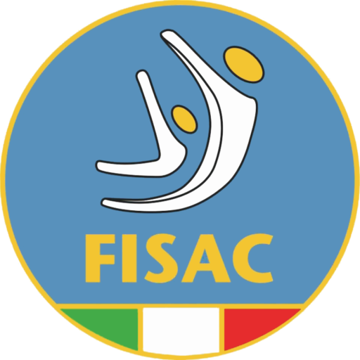
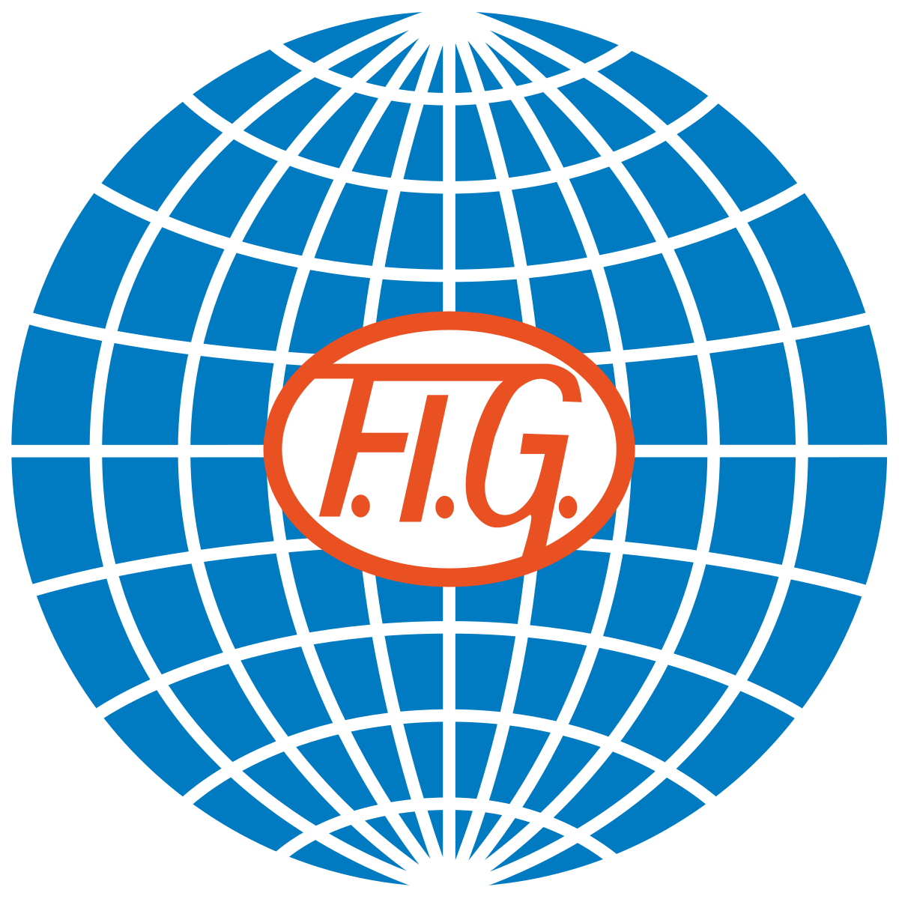
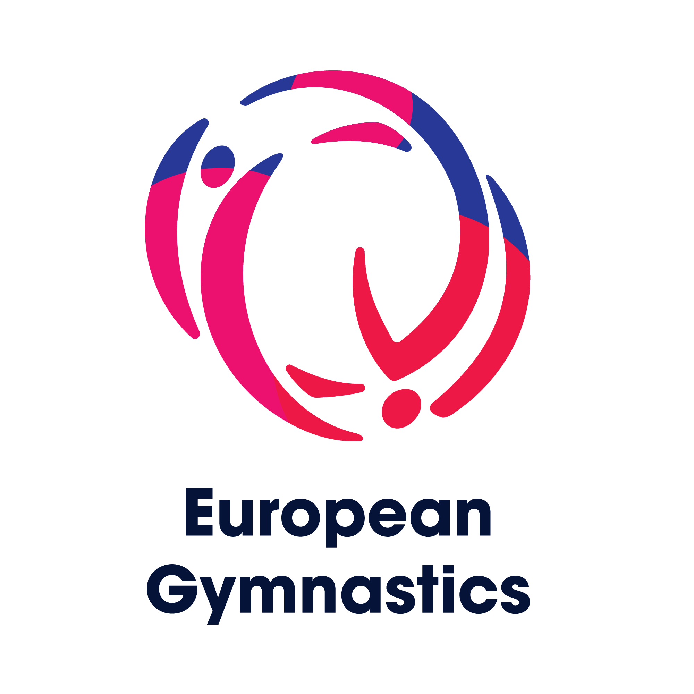

Praticando la ginnastica acrobatica in italia è possibile partecipare a tre differenti campionati:
Federazione Ginnastica ItaliaLa Federazione Ginnastica d'Italia fondata nel 1869 ed eretta ad Ente Morale nel 1896 ha la sede nazionale in Roma. La F.G.I., affiliata agli organismi internazionali competenti quali la F.I.G. - Federazione Internazionale di Ginnastica e la U.E.G. - Unione Europea di Ginnastica, è riconosciuta dal CONI - Comitato Olimpico Nazionale Italiano e dal CIO - Comitato Olimpico Internazionale. Il campionato nazionale di Federazone (FGI) offre l'opportunità a ginnasti grandi e piccoli di partecipare al campionato silver (categorie L1-L2 open/allievi) e gold (L3-L4-L5 open/allievi, Age Group 10-16, 11-18, 12-19 e Senior). |
|
|  |
Federazione Italia Sport Acrobatici e CoreograficiLa FISAC è nata nel 2006 con l'obiettivo di essere il punto di riferimento in Italia per gli sport acrobatici riconosciuti a livello internazionale ma con scarsa presenza sul territorio italiano. I numerosi club e tesserati in Italia hanno sempre dovuto organizzarsi autonomamente per partecipare ad eventi internazionali, ottenendo risultati di alto livello tecnico. La FISAC si impegna nella divulgazione, promozione e organizzazione di queste discipline, offrendo anche tutela tecnica, sanitaria e assicurativa per tutti i praticanti di ogni età. Lo statuto della FISAC segue le linee guida del CONI, promuovendo lo sviluppo e la valorizzazione degli sport acrobatici in Italia. Il campionato nazionale Fisac dell'acrosport si divide tra la categoria C (C3 senior/junior, C1, C2); categoria Youth (dagli 8 a 16 anni); serie B e Age Group (8-16, 11-18, 12-19 e Senior). |
 |
Uisp sport per tuttiUisp è un'associazione sportiva e sociale che promuove il diritto allo sport per tutti i cittadini, con valori di solidarietà, inclusione, rispetto per l'ambiente e cooperazione internazionale. Collabora con istituzioni pubbliche e private per migliorare il benessere delle persone attraverso l'attività sportiva, basata su partecipazione, solidarietà e difesa dei diritti umani. Conta più di un milione di soci e si impegna nella formazione degli educatori per offrire attività sportive accessibili a tutti, riconoscendo e valorizzando le differenze di ciascuno. Nel campionato uisp è possibile partecipare ,oltre che nelle categorie che vanno dalla prima alla quarta, la serie B e la serie A1-A2, permette anche ai ginnasti più piccoli di gareggiare nella fascia base. |
Per gli atleti che vengono selezionati per rappresentare la nazionale, c'è la possibilità di partecipare ai mondiali (FIG) e europei (UEG):
International Gymnastics FederationIl filosofo Platone ha descritto la sua filosofia dell'educazione in La Repubblica, sottolineando l'importanza della ginnastica per il corpo e della musica per l'anima. Secondo Platone, l'attività fisica e intellettuale dovevano andare di pari passo. La ginnastica nel mondo antico includeva sia il wrestling che la danza, gettando le basi per la Ginnastica moderna regolata dalla FIG. Nel corso della storia, la ginnastica ha subito diverse trasformazioni. La FIG, fondata nel 1881, è l'organizzazione mondiale di governo della ginnastica, disciplinando diverse categorie di ginnastica e collaborando con oltre 160 federazioni nazionali. La sua sede si trova a Losanna, in Svizzera, ed è stata fondamentale nello sviluppo e nell'evoluzione della ginnastica come sport olimpico. |
 |
European GymnasticsUEG (European Gymnastics), conta 50 federazioni nazionali aderenti. Si tratta di un'organizzazione sportiva che si estende oltre i confini dell'Europa politica, ma che porta con sé l'idea di una nazione di ginnastica unita. In quanto garante degli interessi dei suoi circa 8 500 000 ginnasti, la ginnastica europea rappresenta molte sfaccettature: nessun'altra federazione sportiva in Europa propone una tale varietà di offerte: dagli sport agonistici di alto livello in quattro discipline olimpiche e tre non olimpiche agli sport ricreativi nella ginnastica per tutti, con offerte per tutte le fasce d'età, dai più piccoli agli anziani. Le ginnaste europee trasmettono la loro idea di stare insieme al di là delle frontiere e danno l'esempio nella comunità. |
 |